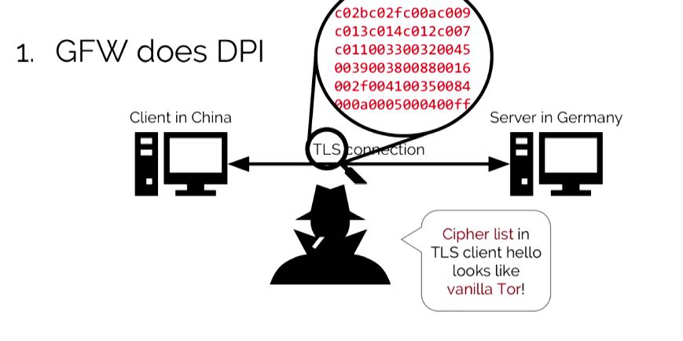
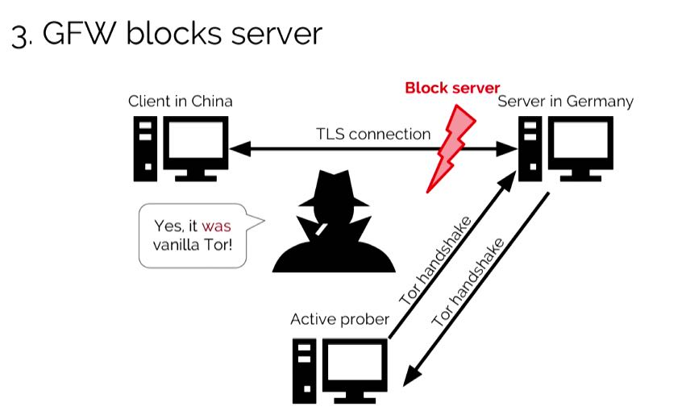
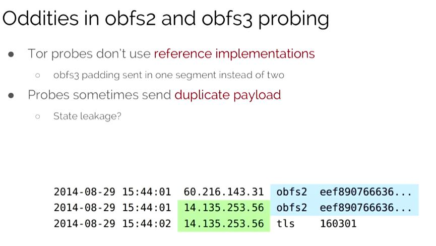
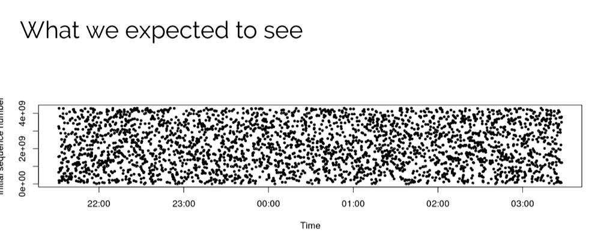
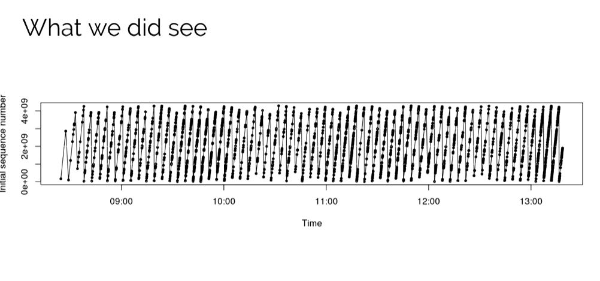
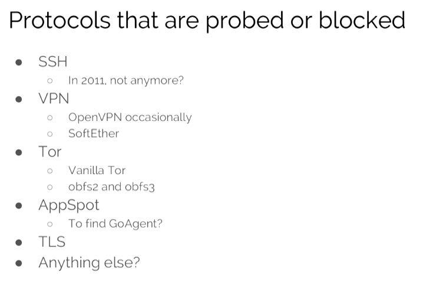
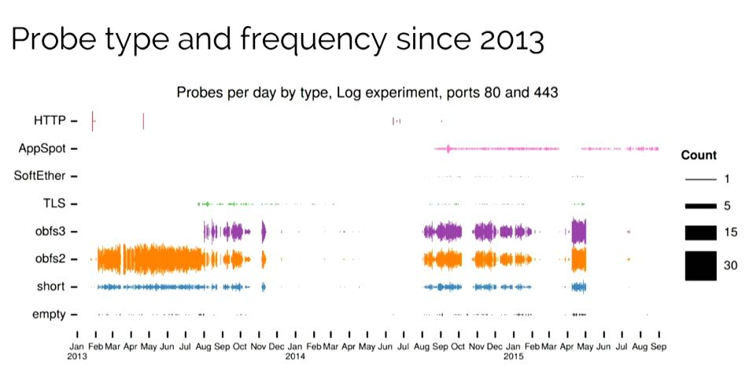
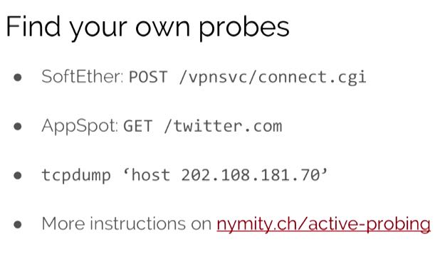
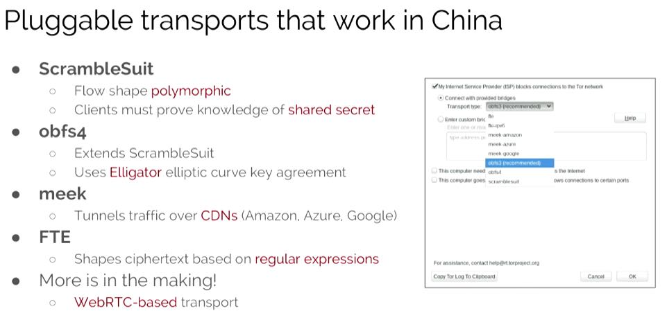

How_the_Great_Firewall_discovers_hidden_circumvention_servers
标题也是这个视频的名称, 为了方便我就直接粘贴过来了. 视频里面提到了gfw如何使用active probe(主动检测)技术来发现隐藏服务器.
gfw通过DPI(deep packet inspection)技术来发现潜在的隐藏服务器, 并且判断运行服务类型比如Tor.

一旦判断可能是Tor服务的话, 就使用tor协议通信. 如果server正确响应的话, 那么就可以确定是个tor服务器了.

有趣的是这些active probe都不是按照规范来实现(或者说用现有实线代码), 而是自己重新实现的(handcraft), 不管是因为效率或者是其他原因. 不过问题是, 这种实现方法也暴露了自身.

观察TCP syn number也可以发现比较有趣的事情. 正常的tcp stack的tcp syn number应该是均匀分布的, 而gfw active probe发出的syn number却和时间相关.
 
下图是主动侦测的协议, 以及侦测频度统计. obfs2看上去像是gfw最近研究的方向.
 
使用下面几个方法也可以自己观察gfw active probe的行为.

除了obfs以外, 几个Tor里面可以躲避GFW的传输协议.
